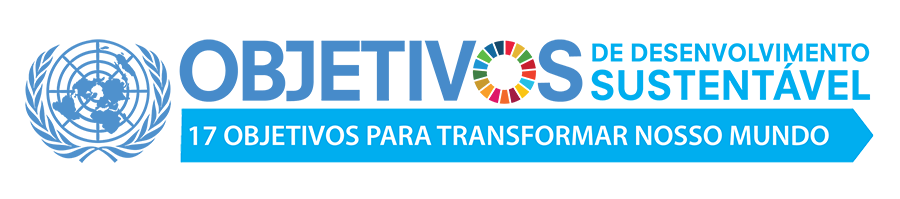

O objetivo do meu trabalho é divulgar maximo de informaçao possivel para as pessoal da minha comunidade.
Pergunta: Qual é o tema ou ODS que faz sentido para nossa comunidade? Entao nosso tema se trata em água potavel.

Objetivos de Desenvolvimento sustentável
Erradicação da pobreza: acabar com a pobreza em todas as suas maneiras, em todos os
locais.
Fome zero e agricultura sustentável
Saúde e bem-estar: assegurar uma vida saudável e promover o bem-estar para todos.
– Educação de qualidade: assegurar a educação inclusiva, equitativa e de qualidade para
todos
Igualdade de gênero: alcançar a igualdade de gênero para todas as mulheres e meninas.
Água limpa e saneamento: garantir disponibilidade e manejo sustentável da água e
saneamento para todos.
Energia limpa e acessível: garantir acesso à energia barata, confiável, sustentável e
renovável.
Trabalho decente e crescimento econômico.
Indústria, inovação e infraestrutura: construir infraestrutura resiliente, promover a
industrialização inclusiva e sustentável, e fomentar a inovação.
Redução das desigualdades: reduzir as desigualdades dentro dos países e entre eles.
Cidades e comunidades sustentáveis: tornar todos os assentamentos humanos
inclusivos, seguros e sustentáveis.
Consumo e produção responsáveis: assegurar padrões de produção e de consumo
sustentáveis.
Ação contra a mudança global do clima: tomar medidas urgentes para combater a
mudança climática e seus impactos.
Vida na água: conservação e uso sustentável dos oceanos, dos mares, e dos recursos
marinhos para o desenvolvimento sustentável.
Vida terrestre: proteger, recuperar e promover o uso sustentável dos ecossistemas
terrestres, gerir de forma sustentável as florestas, combater a desertificação, deter e reverter
a degradação da Terra e deter a perda da biodiversidade.
Paz, justiça e instituições eficazes: promover sociedades pacíficas e inclusivas para o
desenvolvimento sustentável.
Parcerias e meios de implementação: fortalecer os meios de implementação e revitalizar
a parceria global para o desenvolvimento sustentável.